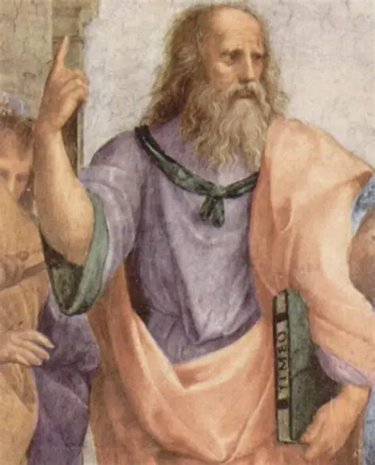

Platon deeply reflected on justice and the organization of the State. In his work 'The Republic', he proposed a government led by philosopher-kings, where each citizen fulfilled the role that corresponds to them according to their nature. Today, his ideas are related to ethics in politics, the education of responsible leaders, and the debates on how to achieve just and balanced societies. He founded the Academy in Athens, the first formal educational institution in the West, and developed theories on justice, politics, and the organization of the State. He proposed that society should be governed by wise and virtuous leaders, and promoted the education and training of citizens as a basis for a just and balanced government.
